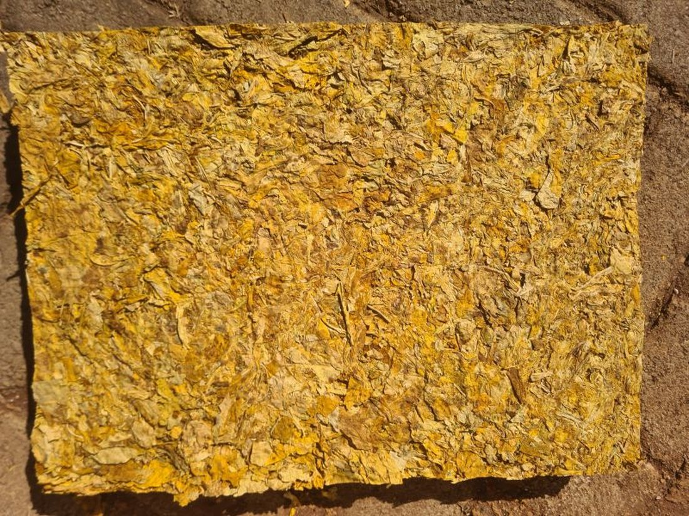

Pure Leaf Excellence Without Stems
Tobacco Lamina
Pure tobacco leaf lamina, carefully separated from stems to provide the highest quality leaf material. Perfect for premium tobacco products requiring pure leaf content without stems or foreign matter.
- Stem Content
- < 2%
- Moisture Content
- 11-13%
- Leaf Purity
- 98%+